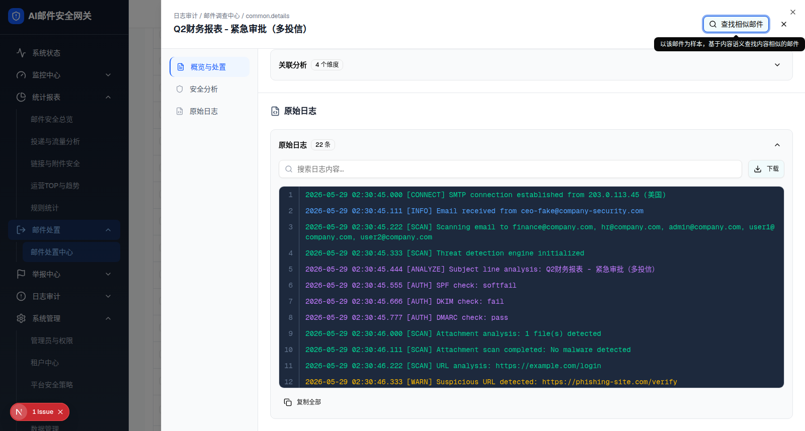

| 所属组件 | 2.4 详情抽屉 → RawLogsSection（components/mail-investigation/raw-logs-section.tsx，300 行） |
| 主文件 | index.html#component-2-4 |
| 触发路径 | 抽屉左侧导航「原始日志」（#section-rawlogs） |
| 地面真值 | matrix（多投信）：live/matrix-section-rawlogs.html + matrix-shot-rawlogs.png |
AUTH 或 phishing）；点击标题栏折叠；点「复制全部」看按钮态切换。2026-05-29 02:30:45.000 [CONNECT] SMTP connection established from 203.0.113.45 (美国)
2026-05-29 02:30:45.111 [INFO] Email received from ceo-fake@company-security.com
2026-05-29 02:30:45.222 [SCAN] Scanning email to finance@company.com, hr@company.com, admin@company.com, user1@company.com, user2@company.com
2026-05-29 02:30:45.333 [SCAN] Threat detection engine initialized
2026-05-29 02:30:45.444 [ANALYZE] Subject line analysis: Q2财务报表 - 紧急审批（多投信）
2026-05-29 02:30:45.555 [AUTH] SPF check: softfail
2026-05-29 02:30:45.666 [AUTH] DKIM check: fail
2026-05-29 02:30:45.777 [AUTH] DMARC check: pass
2026-05-29 02:30:46.000 [SCAN] Attachment analysis: 1 file(s) detected
2026-05-29 02:30:46.111 [SCAN] Attachment scan completed: No malware detected
2026-05-29 02:30:46.222 [SCAN] URL analysis: https://example.com/login
2026-05-29 02:30:46.333 [WARN] Suspicious URL detected: https://phishing-site.com/verify
2026-05-29 02:30:46.444 [THREAT] Multiple threat indicators identified
2026-05-29 02:30:46.555 [DECISION] Performing decision analysis.
2026-05-29 02:30:46.666 [ENGINE_1] 意图检测引擎: 威胁
2026-05-29 02:30:46.777 [ENGINE_2] 深度内容分析: 可疑
2026-05-29 02:30:46.888 [ENGINE_3] AI-URL势能检测: 钓鱼
2026-05-29 02:30:46.999 [ENGINE_4] 本地策略检查: 通过
2026-05-29 02:30:47.111 [ACTION] Email marked as malicious
2026-05-29 02:30:47.222 [ACTION] Email quarantined
2026-05-29 02:30:47.333 [ACTION] Email moved to quarantine zone
2026-05-29 02:30:47.444 [INFO] Processing completed. Total time: 599ms

logLevelColors）| 级别 tag | Tailwind class | 色 | 出现示例 |
|---|---|---|---|
| CONNECT / SCAN | text-emerald-400 | 绿 | SMTP 连接 / 扫描 |
| INFO / ENGINE_1~4 / DELIVER | text-blue-400 | 蓝 | 收信 / 检测引擎 / 投递 |
| ANALYZE / AUTH | text-purple-400 | 紫 | 主题分析 / SPF·DKIM·DMARC |
| WARN | text-amber-400 | 琥珀 | 可疑 URL |
| THREAT / ALERT / ERROR | text-red-500 / red-400 | 红 | 威胁指标 / 恶意附件 |
| DECISION / POLICY | text-cyan-400 | 青 | 决策分析 |
| ACTION | text-orange-400 | 橙 | 标记 / 隔离等最终动作 |
| 未匹配级别 | text-gray-400 | 灰 | 兜底 |
| 元素 | 文案 / 图标 | 行为 / 说明 | i18n（zh / en） |
|---|---|---|---|
| 区块标题 | FileCode 图标 + 「原始日志」 | h3，与其它模块标题同款 | —（硬编码） |
| 卡片标题栏 | 「原始日志」+「N 条」徽标（Badge variant="outline"）+ 右侧 Chevron 按钮 | 整行可点折叠（cursor-pointer，onClick=setExpanded）：展开显示 ChevronUp，折叠显示 ChevronDown 并隐藏正文 | 原始日志 / Raw Logs；N 条 / N entries |
| 搜索框 | Search 图标 + 占位「搜索日志内容...」 | 实时过滤（filteredLogs useMemo，小写子串匹配）；命中词用 <mark class="bg-yellow-300"> 黄色高亮；无匹配显示「没有匹配的日志记录」 | 搜索日志内容... / Search log content... |
| 下载按钮 | Download 图标 +「下载」（variant="outline"） | 已实现：handleDownload 用 Blob 导出 email-log-{id}-{date}.log（导出 全部 rawLogs，不受搜索过滤影响） | 下载 / Download |
| 日志查看器 | 深色 bg-slate-800 等宽字体，max-h-[400px] 可滚动 | 每行 = 行号列（w-10 右对齐 select-none 带右分隔线）+ pre 正文；hover bg-slate-700/50 | — |
| 行号列 | 1..N | 存在；按 过滤后可见行重新编号（index+1） | — |
| 复制全部 | Copy 图标 +「复制全部」（variant="ghost"） | handleCopyAll 写剪贴板（复制 filteredLogs）；点击后切换 Check 图标 +「已复制」，2s 后复原 | 复制全部 / Copy All；已复制 / Copied |
| 搜索计数（条件） | 「找到 X / N 条记录」 | 底部右侧，仅在搜索框非空时渲染（{searchQuery && ...}） | 找到 X / N 条记录 / Found X / N entries |
| 数据来源 | 前端 mock，非真实日志 | generateMockRawLogs(log) 由该行邮件字段拼接后 .sort()（字典序），条数随邮件属性（附件/URL/二维码/投递状态）动态变化 | — |
span.w-10）、按级别语法着色（logLevelColors）、命中黄色高亮（<mark class="bg-yellow-300">）均已实现。handleDownload 已用 Blob + a[download] 落地导出（文件名 email-log-{id}-{date}.log）。rawLogs.length（总数），不随搜索变化；变化的是底部「找到 X / N 条记录」。filteredLogs（受搜索影响）；下载 = rawLogs（永远全量）。此不一致来自源码，如实记录。generateMockRawLogs 生成并 .sort() 字典序排列（非时间序保证）；条数因邮件而异（matrix 多投=22 条，single 单投=17 条）。抽屉面包屑第三段仍渲染原始 key common.details（见 layer-10/11）。| 比对项 | 实时 demo DOM | 预览 HTML | 是否一致 |
|---|---|---|---|
| 区块根节点 | div#section-rawlogs.p-6 | 同 | ✅ 一致 |
| 卡片根 | div.mt-6.p-4.bg-gray-50…rounded-lg.border | 同 | ✅ 一致 |
| 元素节点总数 | 99（含根） | 99 | ✅ 一致 |
| 徽标文案 | 「22 条」 | 「22 条」 | ✅ 一致 |
| 折叠 Chevron | 展开态 lucide-chevron-up | 同（展开态） | ✅ 一致 |
| 搜索框 | 1，placeholder="搜索日志内容..." | 同 | ✅ 一致 |
| 按钮 | 下载（outline）/ 复制全部（ghost） | 同 | ✅ 一致 |
| 日志行数 | 22（多投信 matrix） | 22 | ✅ 一致 |
| 行号列 | 存在（span.w-10…border-r） | 存在 | ✅ 一致（已修正旧稿误判） |
| 级别着色 | emerald/blue/purple/amber/red/cyan/orange | 同（逐行 class 一致） | ✅ 一致 |
| 搜索计数节点 | 初始不渲染（searchQuery 为空） | 预览由 JS 动态插入 | ✅ 一致 |
说明：预览为精简过 Tailwind 工具类的静态 DOM（1:1 保留结构类与文案）；上表按结构类与关键文案比对。